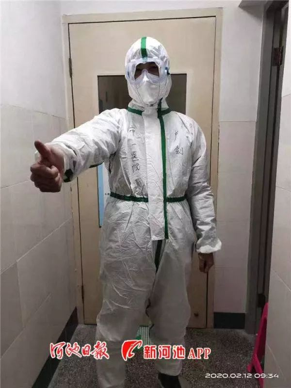
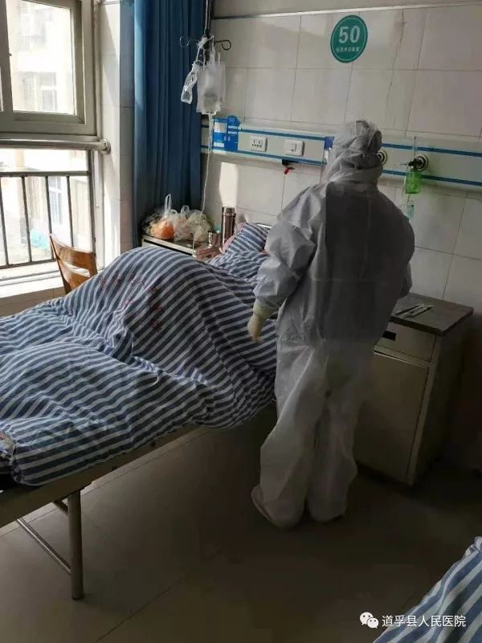

口述实录 | 我在黄冈抗疫医疗一线
原文链接 备份链接 我也是个普通人，也会恐惧。但我是一名医务工作者，同时是一名党员；我们黄冈的疫情是全国城市里除武汉之外最重的几个之一，这样的困难情况下，我们不去，谁去？必须要坚持，一定要挺住。 口述 | 陈 林 整理 | 王 煜 我是湖 …
澎湃新闻记者 何利权 实习生 粟满莺 李佳悦

因缺乏物资，都安县医护人员自制防护用品。
因新冠肺炎确诊患者在短期内陡增，且感染人数占到所在市（州）的绝大部分，个别位置偏僻的贫困县正面临着一场艰难的“战疫”。
截至2月11日，广西壮族自治区河池市都安瑶族自治县确诊新冠肺炎14例，而河池全市确诊病例不过21例。仅有5万人口的四川省甘孜藏族自治州道孚县目前确诊31例，这个数据超过了四川大多数地市，也让甘孜州的感染人数在四川地市（州）中排到第二，仅次于成都。
都安县新冠肺炎防控指挥部一名工作人员告诉澎湃新闻，“疫情爆发太过突然”，每个人都“绷紧了神经”。而在新冠肺炎袭扰之下，因医疗基础薄弱、物资储备不足，当地医护人员有些“疲于应对”。

因缺乏物资，都安县医护人员自制防护用品。
此前，部分都安医生发布的求助信息显示，因防护医疗用品紧缺，有医护人员只能临时用文件夹、一次性治疗巾、塑料袋等物品替代。2月9日，都安因此上了热搜，“成为广西抗击疫情最严峻的战场之一”。
不过，情况正在得到改善。随着都安、道孚向外求助，引起上级政府及社会关注，医护力量、防护物资等资源正在通过各种渠道向当地汇集。道孚县人民医院工作人员称，目前已经接收了政府以及爱心人士的帮助，医疗资源紧张的状况得到一定缓解。

医护人员向外求助后，得到各方支援，物资短缺问题得到缓解。
疫情来袭，政府部门“绷紧了神经”
1月29日，都安县出现首例新冠肺炎确诊患者，此后该县确诊病例一路攀升，至2月11日已有14例，其中6例为家庭聚集性感染。而河池全市确诊病例21例，都安就要占到三分之二。2月8日，都安确诊患者中有1人死亡，这也是广西出现的首例死亡比例。

河池市第一人民医院医护人员前往都安支援。河池日报 图
都安是广西四个极度贫困县之一，有70多万人口，因此处石山遍布，被外界称为“九分石头一分土”。确诊患者陡增，令这里的抗“疫”形势颇为紧张。中国新闻网报道称，都安确诊病例涉及多个小区、村庄，“人员分散、行踪难以确定”，给疫情防控带来很大难度。而通报显示，多名病例至今未能查明感染路径。
都安俨然成为“广西抗击疫情最严峻的战场之一”。2月11日，该县新冠肺炎防控指挥部一名工作人员告诉澎湃新闻，“都安疫情爆发太过突然”，也是广西首次出现死亡病例的县市，政府部门的每个人都“绷紧了神经”。
对于都安的复杂情况，河池市采取了严格排查管控、严格实行封闭式管理、严格控制人员外出、严禁一切聚集性活动、严格对重点人员的管理、严格公共场所管理、严格垃圾收运处置工作和严格酒店和房屋出租管理等八项措施。
相比于都安，仅有5万人口的四川省甘孜藏族自治州道孚县的“抗疫”形势或更为严峻。据甘孜州政府新闻办消息，2月11日新增的9例新冠肺炎确诊病患，全部来自道孚县。至此，甘孜累计确诊新冠肺炎36例，其中31例发生在道孚。这个川西小县的确诊病例甚至超过四川大多数地市，也让甘孜州的感染人数在全省排到第二，仅次于成都。
1月24日，大年三十，道孚县收治了首名新冠肺炎疑似患者。该患者最终化验结果为“阳性”，确诊新冠肺炎。彼时，当地还很少有人能够想到，远在湖北肆虐的新冠肺炎会在这里掀起巨大风波。特别是2月9日、10日、11日，甘孜州确诊病例三天增加19例，均发生在道孚。至此，道孚县累计31人被确诊，这些人中，常住人口居多，仅有个别病例有武汉旅居史。其中有18例来自三个家庭，均为家庭聚集导致感染。

疫情来袭，道孚县人民医院医护人员坚持工作。道孚县人民 医院微信公众号 图
道孚县地处川西高原，平均海拔3500米，位置偏远，仅有5万人口。医护条件本就有限，突然袭来的疫情令当地“如临大敌”。2月7日，道孚县两名干部在疫情防控工作中没有落实工作，且擅离职守，被立案调查；8日，道孚对“五乡一镇” 实施封闭式管理，居民不得外出，生活必需品由政府分户配送；9日，道孚县建立新冠肺炎疫情联防联控举报和奖惩机制，最高奖励5万元。
2月11日，道孚县疫情防控举措再次“升级”。据《川报观察》报道，道孚县进一步严格县、乡、村“三圈层”的通道管理，人车必查，严防疫情输入和输出。一名居民告诉澎湃新闻，当地市面上买不到口罩、酒精等物资，“街上几乎没人没车了，大家更多的是在家里不出门”。
物资告急，医护人员自制防护用品
“数十人确诊，上百人被隔离，这对于一个小县来说，相当困难。”一位甘孜州当地人士告诉澎湃新闻，道孚地广人少，隔离病人不难，但因此产生的防护物资、医护人员等需求，这样的挑战，道孚县的医疗水平很难“支撑”。
首先感到压力的是极少面对这类疫情的本地医护人员。道孚县人民医院官微载文透露，儿科护士长胡小燕大年三十（1月24日）晚上接到同事电话，“我们科好像收治了一位疑似患者，症状与新型冠状病毒导致的肺炎相似”。她赶回医院，进入隔离病区，消毒、采血、送样。同事为她担心，但她自知“不能退缩”，“我不能让我的护士们去冒险。”
这名患者确诊后，道孚县人民医院陆续收治多名病例。为应对疫情，全院医护人员组建了四支梯队，每队由一名院领导和16名医护人员组成——在前一组人员疲惫后，其余梯队则依次替换、增援。

疫情来袭，道孚县人民医院医护人员坚持工作。道孚县人民 医院微信公众号 图
医院官微一篇文章提及，一次，从隔离区出来的手术麻醉科负责人杨灵莉见到同事，第一句话是，“我是换了衣服上来的，全身都换了，也做了正规的消毒”。文章作者感慨，“听起来有些无奈，又有些心酸”，大家既是亲密战友，也是“最近的敌人”，但还是要保证在工作期间的安全。在医院工作群里，大家相互打气，“不是不怕，每个人都怕，但职责所在”。
随着确诊病例增多，道孚县的医护力量很快开始“捉襟见肘”。2月2日，道孚县向成都郫都区“求援”，称当地“专业医卫人手不足，疫情防控物资紧缺”；4日，道孚县发布接收社会捐赠的公告，筹集防护服、一次性隔离衣、N95口罩等医用防护用品。
都安瑶族自治县医护人员面临的困境或更为艰难。该县定点收治医院都安瑶族自治县人民医院，因防疫物资紧缺，医务人员只能在简陋的条件下工作，甚至“自制防护用品”。2月9日，网上流传的消息和照片显示，当地一线医护人员的口罩要用2到3天，有的防护服是用一次性治疗巾、雨衣或床单制成，文件袋拿来充当防护面罩，放射科的资料袋、塑料袋则成为防护鞋套。
此事经广西当地媒体报道后，登上微博热搜。2月11日，该县疫情防控指挥部一名工作人员向澎湃新闻证实，上述情况属实。一线医护人员面临着暴露在新冠肺炎病毒下的风险。中国新闻网报道称，都安14例新冠肺炎确诊患者中，即包括县人民医院麻醉科36岁女医师韦某，她曾为确诊病例莫某进行气管插管术，后在2月7日被确诊。
各方驰援抗疫“主战场”
因疫情严重，都安和道孚两县，成了所在市州甚至省份的抗疫“主战场”，得到各方支援。
甘孜州道孚县向成都市郫都区求援后，后者即刻予以回应。《天府早报》报道称，郫都区派了17名医护人员前往道孚，并带了300套防护服，5000个一次性口罩，5000个医用口罩以及数十桶医用酒精、消毒液等物资。
2月10日，同属甘孜州的联社县也向道孚县捐赠现金20万元、医用口罩2000个。道孚县人民医院一位工作人员2月12日告诉澎湃新闻，目前道孚县已经接收了来自四面八方爱心人士以及政府的帮助，医疗资源紧张的状况得到缓解。
据澎湃新闻了解，道孚县部分确诊患者和危重患者都会转入甘孜州人民医院，这是康定市唯一定点接收确诊肺炎患者的医院。该院的物资情况也比较紧张，曾经于1月29日发布捐赠公告。十多天过去了，甘孜州的物资匮乏问题已经得到缓解。
2月12日，甘孜州人民医院一位工作人员称，在政府和社会各界的帮助下，医院收到很多医用物资，但是一线医护人员所需的N95口罩和防护服依旧缺乏。“现在全国物资都很紧缺，甘孜也不例外。但是政府已经通过其他渠道调运物资，首先保障临床一线医护人员的需要。” 医院院长吴丹告诉澎湃新闻。
医护力量也得以增补。2月8日，四川省、甘孜州两级医疗专家组赴道孚县，协力当地医院抗击新冠肺炎。2月6日下午，州卫健委通知下属各地组派医生驰援道孚，此后至12日，包括丹巴、泸定等在内的县均有调派人员前往支援。“疫情紧张，作为一名医务人员，应该冲在前面，责无旁贷。”丹巴县疾控中心检验科强巴泽仁接受媒体采访时表示，“道孚的环境我熟悉，会藏语，是男同志，去最适合。”
因防疫物资紧缺，2月6日，广西壮族自治区河池市都安瑶族自治县人民医院也曾发布捐赠公告，请求各界紧急援助N95口罩、医用外科口罩、防护服、防护面罩等物资。9日下午，广西壮族自治区疫情防控指挥部立即紧急调配物资，次日凌晨发往都安。据南方plus报道，肩负着扶贫协作都安县任务的深圳市宝安区，也于9日特别调拔400个PPF2口罩，100件防护服送往都安。
民间自发组织的捐献也络绎不绝。广西大学EMBA同学于2月10日向都安送去10000双医用乳胶检查手套和100套杜邦医用防护衣。远在杭州的广西人梁嘉宁，一看到都安告急的消息，立即动员“南宁辣妈群”筹集物资，送去60副护目镜和200套一次性隔离衣。“不管民间还是政府，我觉得广西人的自救反应特别快，不少人都在筹集物资。”梁嘉宁告诉澎湃新闻，“希望都安能好好的”。
2月8日，河池市第一人民医院向都安派遣10名医护人员。据《河池日报》报道，2月9日，因都安“疫情防控形势严峻”，且医护人员工作强度高、工作时间长，需要大量的专业医护人员支援，河池市委、市政府向市第一人民医院发出“增援”信号，当天，医院又派出20人。
2月11日，该院相关工作人员告诉澎湃新闻，这批前往支援的医护人员正和都安县人民医院进行交接。次日，都安新冠肺炎疫情防控指挥部透露，河池市第一人民医院支援队已经全面接管都安县人民医院传染病科。目前，河池市派往都安县援助的医疗队已有6批次，共99人。
据中国新闻网报道，河池市工业和信息化局局长韦安宁表示，在防疫物资调配方面将向重点疫区都安县倾斜。
本期编辑 邢潭
推荐阅读


原文链接 备份链接 我也是个普通人，也会恐惧。但我是一名医务工作者，同时是一名党员；我们黄冈的疫情是全国城市里除武汉之外最重的几个之一，这样的困难情况下，我们不去，谁去？必须要坚持，一定要挺住。 口述 | 陈 林 整理 | 王 煜 我是湖 …
原文链接 备份链接 ********** *****从地图上看，鄂州被武汉、黄冈、黄石“包围”，它的面积只有1594平方公里，是湖北省面积最小的地级市，但因武汉、黄冈是湖北疫情最为严重的两个地区，鄂州的疫情也比较严峻。***** 2月8 …
原文链接 备份链接 【财新网】（记者 丁捷 综合）大批从事重症医学的医护人员奔赴一线。据国家卫健委，截至2月7日，建立了16个省份支援武汉以外地市的一一对口支援关系，以一省份包一市的方式，全力支持湖北省加强病人的救治工作。驰援武汉的医护 …
原文链接 备份链接 疫情发展 根据丁香医生实时数据，截至 2020 年 2 月 6 日 18 时，全国累计确诊病例 28129 例，疑似病例 24702 例，新增确诊病例 3766 例，新增疑似病例 5328 例。其中，重症病例 3859 …
原文链接 备份链接 【财新网】（记者 张帆）2月3日，首都医科大学附属复兴医院心内科重症监护室出现聚集性病例，确诊9例，其中医护人员5例。北京第一时间披露了相关情况。西城区副区长缪剑虹介绍称，目前相关人员已经转到定点医院治疗，以轻症为 …